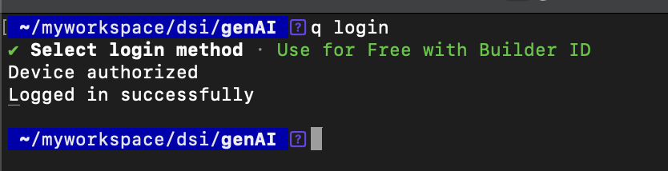
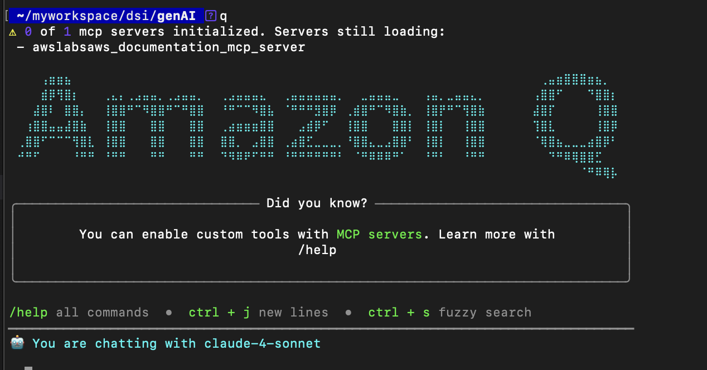
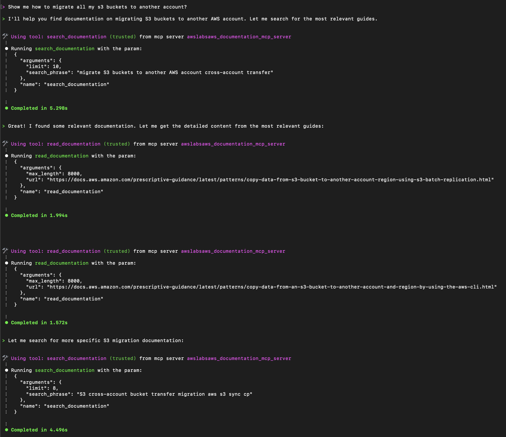
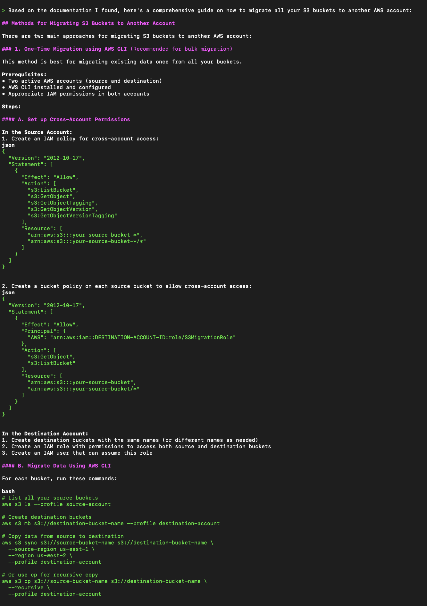
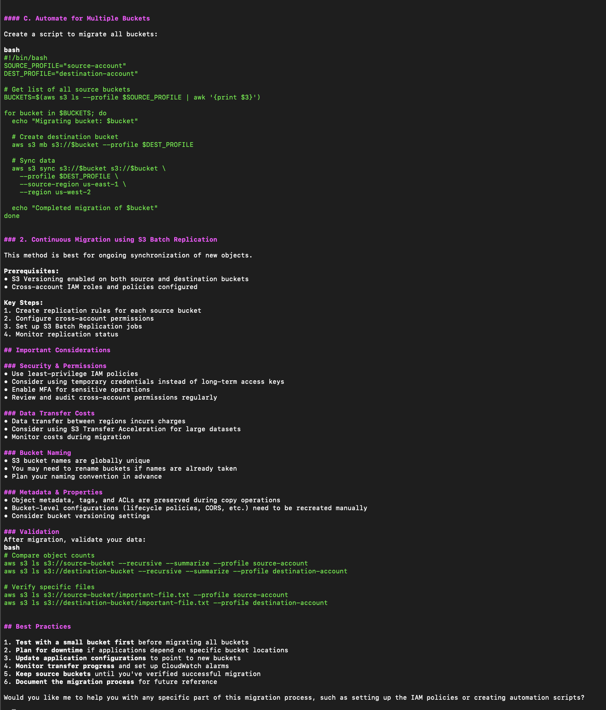

Having fun with Amazon Q CLI and MCP
Okay, so you might be wondering, what the heck is Amzon Q, and what is MCP? Dont worry, I was just confused at first!
So, we recently had a meeting with our AWS guru the other day, and introduced to us Amazon Q and MCP.
Let me give you a quick intro to both.
Amazon Q
You have probably noticed that small blue icon when you visit the AWS docs. yes yes, that’s Amazon Q
Basically, it’s AWS’s new Gen AI assitant that helps you understand AWS Services. You can ask it questions, and it will answer all the bla-bla-bla. But did you know that you can also use it from your terminal? Well… yep you can.
MCP
Short for Model Context Protocol.
Think of it as the magic connector behind the scenes that makes Amazon Q smarter. Like a phone that lets Q call up tools, such as your AWS account, to get info it doesn’t already know. Using the Amazon Q CLI, you can type something like:
“How do I create an EC2 instance?” And MCP links Q to a server that fetches the answer.
P.S. It can also generate code. 😎
Installing Amazon Q for the Command Line
The installation is rather simple. You can just follow the official documentation
I am using the Basic Tier, since…i’m poor 😭
To login, just type
q login
It will log you into your account and ask for your permission to use Amazon Q.

Before we start interacting with Q, we need to add the MCP Servers. Head over to the aws labs github repos.
Under the Prerequisites, you will need to install uv from Astral and have Python 3.10 or newer installed.
Now, add the following JSON config to your file at ~/.aws/amazonq/mcp.json:
{
"mcpServers": {
"awslabs.aws-documentation-mcp-server": {
"command": "uvx",
"args": ["awslabs.aws-documentation-mcp-server@latest"],
"env": {
"FASTMCP_LOG_LEVEL": "ERROR",
"AWS_DOCUMENTATION_PARTITION": "aws"
},
"disabled": false,
"autoApprove": []
}
}
}
Once done, type q in your terminal.

Bravo, you have successfully added Amazon Q to your terminal! 🥳
Now for the fun part.
Chatting with Amazon Q
To test if it was working, I asked
“how to migrate all s3 buckets to another account?”
From the screenshot below, you can see that it’s using the MCP server we added earlier awslabsaws_documentation_mcp_server to do the reasearch.

It provided detailed steps, including the IAM and bucket policies you’d need to add.

Then it went further — giving best practices and important considerations.

And there you have it.
I’ll try something even cooler next 👀